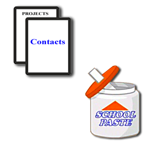
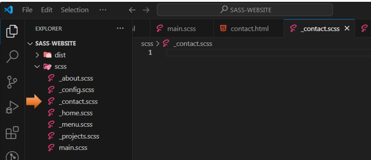

~13 The Contact Page~
9/30/2024
Copy the Projects.html for the Contact.html file
Make Changes to the Copied New HTML Page
Copy And Paste the home.scss to the contact.scss
Add the include into the top of the main.scss
To get to the code for this tutorial
Turn on Sass
In Visual Studio
Remember to turn on your Watch Sass
Create the Contact HTML File
As usual, we create the new file that will contain our new contact page.
Inside the dist folder, create a new file.
Copy the Projects.html for the Contact.html file
Make Changes to the Copied New HTML Page
Change the Title
Change the active to be on the new contact menu link.
*Warning, make sure active is placed within the quotation marks of the class.
Change the section class to contact.
Remove this section of code from inside of the section contact class
Yes, just remove the code inside of the section, up to the div for the social icons, as the section div, itself, is not closed out until after the footer on the page.
Write this code inside of that section
<h2>Contact Me...</h2>
<div class="contact__list">
<div class="contact__email">
<i class="fas fa-envelope"></i>Email
<div class="text-secondary">email@email.com</div>
</div>
</div>
Copy and paste those two divs under the h2 tag, and paste it two more times to make three of them. Then make the following changes to the last two sections of divs.
<section class="contact">
<h2>Contact Me...</h2>
<div class="contact__list">
<div class="contact__email">
<i class="fas fa-envelope"></i>Email
<div class="text-secondary">email@email.com</div>
</div>
<div class="contact__phone">
<i class="fas fa-mobile-alt"></i>Phone
<div class="text-secondary">123-456-7890</div>
</div>
<div class="contact__address">
<i class="fas fa-marker-alt"></i>Address
<div class="text-secondary">1234 Somewhere</div>
</div>
</div>
Notice that the contact__list class div encircles the individual sections of divs.
Test the Page
Ok, now if you look at this page, it will really look like crap. Yeah, no CSS…Yet.
But if you click the hamburger menu, you should see that the contact page is highlighted.
Create the SASS Partial
Inside of the scss folder, we will be creating our contact.scss file
Copy And Paste the home.scss to the contact.scss
since it will be very similar

Add the include into the top of the main.scss
Here you want to remember to import the contact file at the top of your main.scss file
Change the name of the rule in your _contact.scss to .contact.
It was home, and we need it to be .contact.
Remove this aligning to center code
Add this code in where those two rules were.
I did some changes to the logo in my image for this page, so I wanted it more customized to fit the layout. You will see that I named this image to be contact-image.jpg.
Centering the logo allowed it to fit the page better when I reduced it to a cell phone size.
Then just remove the rest of the code, but remember to leave the closing curly brace of the contact rule.
Add some room before the closing brace, we will be adding some more code to this rule.
Here, we are adding an h2 rule. The &__list will be styling the contact information on the page in a grid, and lastly we are styling the social icons.
h2 {
font-size: 3rem;
margin-bottom: 2rem;
}
&__list {
display: grid;
grid-template-columns: 1fr;
grid-gap: 2rem;
font-size: 1.5rem;
}
.social-icons {
position: initial;
margin-top: 2rem;
}
Testing the page
To get to the code for this tutorial